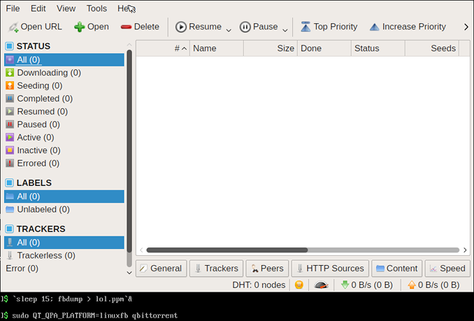

Как оказалось, ЛЮБУЮ программу, использующую Qt, можно запустить в голой консоли! Нужно запускать с опцией:
-platorm linuxfb
и о чудо,оно работает! Проверено на браузере falkon, программах dolphin и qbittorrent - все работает. Но только в tmux, в обычной консоли может не получиться.
Другой вариант добиться такого же поведения - это воспользоваться переменной окружения:
QT_QPA_PLATFORM=linuxfb
Данная возможность работала еще в Qt4, а экспериментальной эта возможность была еще в Qt 3.5.x.
Режим поддержки графического вывода на фреймбуфер работает благодаря слою абстракции QWS.
Выглядит этот режим примерно так (обратить внимание на форму курсора мышки возле пункта меню Help):

Скриншот в таком режиме можно сделать командой:
cat /dev/fb0 > screen.bmp
и после этой команды файлу screen.bmp надо прилепить bmp-заголовок.
Или, еще проще, можно сразу получить графический файл:
fbdump > screen.ppm
Такой файл потом можно легко сконвертировать в любой другой графический формат изображений.